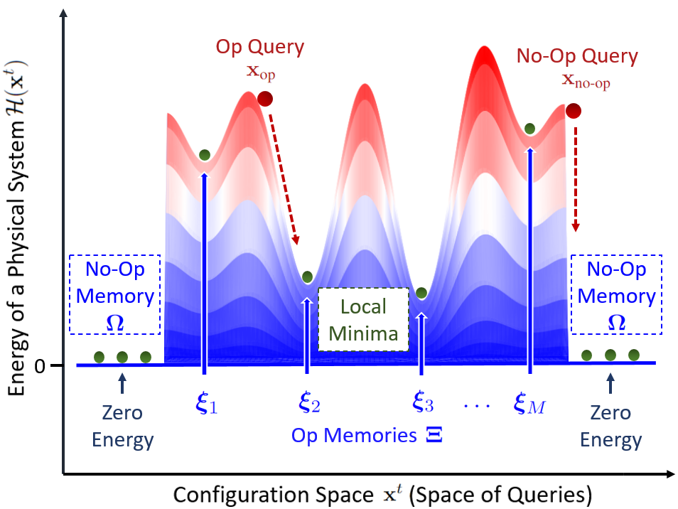
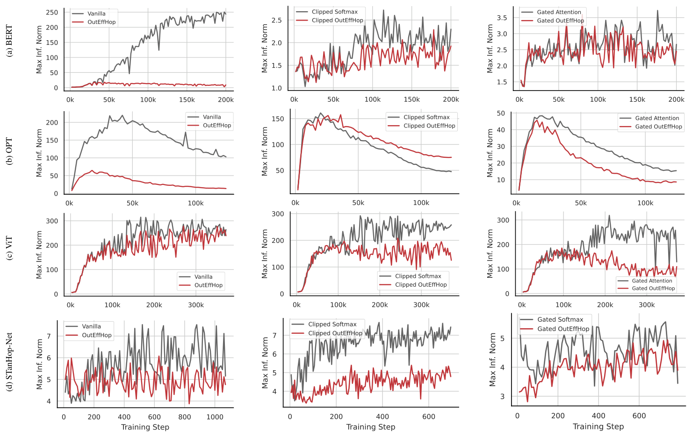
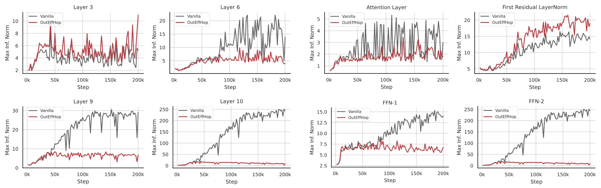

BERT-base Average kurtosis · pretraining from scratch
418.72426.564
93.66% lower average kurtosis
Vanilla attention → OutEffHop
An associative-memory account of outlier-efficient attention.
 1Northwestern University
1Northwestern UniversitySoftmax cannot assign zero probability. Large models learn to park attention on tokens that carry little information, and the cost shows up as activation outliers.
When a token's representation already has enough information, the best attention update is close to zero. Prior work observed that attention heads approximate this no-update behavior by concentrating on low-information tokens such as delimiters, punctuation, or background patches in ViT. The paper calls these no-op outliers.
To make that concentration possible, the logits \(\mathbf{Q}\mathbf{K}^{\top}\) must span a wide range. Because softmax never reaches exact zero, gradients keep reinforcing the pattern during training. The resulting outliers make 8-bit quantization harder.
OutEffHop reads attention as memory retrieval in a modern Hopfield model. Stored patterns that are unrelated to the query are mapped to a single no-op memory \(\Omega\) at zero energy.
A relevant query descends to its nearest stored pattern. A query that matches nothing settles at the zero-energy point, which contributes nothing to the retrieved output.
Figure 1 · conceptual energy landscape
Op memories \(\boldsymbol{\xi}_\mu\) and the no-op memory \(\Omega\)

Add one dimension that classifies memories as no-op, then derive the retrieval rule from the new energy.
Modern Hopfield models retrieve a memory as an expectation of stored patterns under \(\operatorname{Softmax}(\beta\,\Xi^{\top}\mathbf{x})\). A single retrieval step of that model is ordinary attention. OutEffHop changes the energy function so that one retrieval step becomes \(\operatorname{Softmax}_1\) attention, which can place probability mass on nothing.
Queries and memories gain an extra coordinate. Memories marked as no-op are mapped to one class vector \(\Omega\), whose inner product with every query is zero.
The energy uses a refined log-sum-exp. The extra term \(+1\) is the contribution of \(\Omega\), which creates a zero-energy point.
A standard concave-convex derivation gives an update that monotonically decreases \(\mathcal{H}\) (Lemma 2.1). One step of this update is \(\operatorname{Softmax}_1\) attention.
Mapping queries and memories through learned projections yields a layer that replaces attention in transformers and Hopfield layers in Hopfield networks.
\(\mathbf{x}\in\mathbb{R}^d\) is a query pattern and \(\Xi=[\boldsymbol{\xi}_1,\ldots,\boldsymbol{\xi}_M]\) holds the stored memory patterns; \(\bar{\mathbf{x}}\) is the query with the extra coordinate set to zero. \(\beta\) is the inverse temperature and \(C\) is a constant. In the layer, \(\mathbf{R}\) is the raw query input, \(\mathbf{Y}\) the raw memory input, and \(\mathbf{W}_Q,\mathbf{W}_K,\mathbf{W}_V\) are learned projections; setting \(\mathbf{R}=\mathbf{Y}\) recovers self-attention. See Sections 2.2–2.4 of the paper.
Like earlier Hopfield layers, OutEffHop has several configurations. In memory retrieval mode the projections are identities and nothing is learned. OutEffHop learns all three projections and serves as a drop-in attention replacement. OutEffHopPooling uses a learnable query to search static prototype patterns. OutEffHopLayer stores patterns in the learned key and value matrices, so keys and values do not depend on the input.
Giving each no-op pattern its own class vector instead of a shared \(\Omega\) generalizes the denominator from \(1\) to \(K\), which yields \(\operatorname{Softmax}_K\). Read Section 2.4.
BERT-base Average kurtosis · pretraining from scratch
Vanilla attention → OutEffHop
OPT-125m W8A8 perplexity
Vanilla attention → OutEffHop
Each row tracks the largest activation in one layer as training proceeds. The left column compares OutEffHop with vanilla attention. The other two columns apply \(\operatorname{Softmax}_1\) on top of Clipped Softmax and Gated Attention. The vertical scales differ between panels.

Each model is trained from scratch with the attention (or Hopfield) layer replaced. OutEffHop reduces both outlier metrics relative to vanilla attention in all four models, and combining it with Clipped Softmax or Gated Attention usually reduces them further. Clipped OutEffHop on OPT is the exception, in line with earlier reports that Clipped Softmax performs poorly on OPT.
| Model | Method | Avg. kurtosis ↓ | Max inf. norm ↓ | FP16* | W8A8* |
|---|---|---|---|---|---|
| BERT | Vanilla | 418.724 ± 0.814 | 255.859 ± 0.004 | 6.237 ± 0.001 | 7.154 ± 0.009 |
| OutEffHop | 26.564 ± 0.022 | 33.618 ± 0.000 | 6.209 ± 0.001 | 6.295 ± 0.001 | |
| Clipped Softmax | 14.210 ± 0.003 | 33.619 ± 0.001 | 6.118 ± 0.002 | 6.189 ± 0.001 | |
| Clipped OutEffHop | 11.839 ± 0.001 | 30.107 ± 0.001 | 6.133 ± 0.000 | 6.199 ± 0.001 | |
| Gated Attention | 17.779 ± 0.014 | 34.082 ± 0.000 | 6.230 ± 0.001 | 6.299 ± 0.003 | |
| Gated OutEffHop | 15.625 ± 0.012 | 32.777 ± 0.000 | 6.214 ± 0.001 | 6.279 ± 0.003 | |
| OPT | Vanilla | 23341.513 ± 27.363 | 92.786 ± 0.002 | 15.974 ± 0.001 | 42.012 ± 19.514 |
| OutEffHop | 21.542 ± 0.000 | 13.302 ± 0.001 | 15.916 ± 0.002 | 16.429 ± 0.013 | |
| Clipped Softmax | 9731.110 ± 0.000 | 43.803 ± 0.000 | 16.042 ± 0.000 | 30.825 ± 0.330 | |
| Clipped OutEffHop | 24127.332 ± 0.000 | 67.602 ± 0.000 | 16.118 ± 0.000 | 29.269 ± 0.184 | |
| Gated Attention | 90.321 ± 0.000 | 13.704 ± 0.000 | 15.677 ± 0.000 | 16.236 ± 0.074 | |
| Gated OutEffHop | 11.449 ± 0.000 | 7.568 ± 0.000 | 15.751 ± 0.000 | 16.148 ± 0.005 | |
| ViT | Vanilla | 37.104 ± 0.000 | 272.198 ± 0.000 | 76.810 ± 0.000 | 74.935 ± 0.046 |
| OutEffHop | 31.601 ± 0.001 | 249.163 ± 0.000 | 76.788 ± 0.000 | 76.313 ± 0.012 | |
| Clipped Softmax | 33.868 ± 0.00 | 257.613 ± 0.00 | 76.612 ± 0.000 | 75.179 ± 0.013 | |
| Clipped OutEffHop | 24.642 ± 0.000 | 196.199 ± 0.001 | 76.871 ± 0.001 | 76.083 ± 0.007 | |
| Gated Attention | 45.145 ± 0.864 | 269.279 ± 1.426 | 69.922 ± 2.436 | 67.479 ± 1.447 | |
| Gated OutEffHop | 21.979 ± 0.254 | 60.169 ± 1.153 | 74.089 ± 2.585 | 73.958 ± 3.126 | |
| STanHop-Net | Vanilla | 2.954 ± 0.063 | 5.048 ± 0.232 | 0.360 ± 0.008 | 0.362 ± 0.000 |
| OutEffHop | 2.897 ± 0.011 | 4.565 ± 0.209 | 0.360 ± 0.004 | 0.355 ± 0.000 | |
| Clipped Softmax | 2.995 ± 0.05 | 4.890 ± 0.17 | 0.553 ± 0.03 | 0.591 ± 0.000 | |
| Clipped OutEffHop | 2.864 ± 0.06 | 4.145 ± 0.23 | 0.506 ± 0.05 | 0.517 ± 0.000 | |
| Gated Attention | 2.487 ± 0.017 | 4.277 ± 0.163 | 0.380 ± 0.006 | 0.375 ± 0.000 | |
| Gated OutEffHop | 2.459 ± 0.041 | 4.240 ± 0.155 | 0.376 ± 0.007 | 0.367 ± 0.000 |
* FP16 and W8A8 report perplexity for BERT and OPT (lower is better), top-1 accuracy for ViT (higher is better; ViT uses FP32 before quantization), and MSE for STanHop-Net (lower is better). Mean ± standard deviation over three seeds. BERT kurtosis averages FFN and LayerNorm outputs; the other models average every output component. The OPT vanilla W8A8 perplexity has a large standard deviation (±19.514). Parameter counts are 108.9M–109M for BERT, 124.06M–124.07M for OPT, 22.03M–22.04M for ViT, and 35.13M–35.15M for STanHop-Net.
Table 1 & protocolThe left four panels track FFN outputs in layers 3, 6, 9, and 10. The reduction is small in early layers and grows in later ones. The right four panels break layer 10 into components. OutEffHop suppresses the outliers in both FFN layers but not in the first residual LayerNorm, which the paper lists as a limitation.

STanHop-Net is a Hopfield-based model for multivariate time series. The paper swaps its Hopfield layer for dense, sparse, generalized sparse (GSH), and OutEffHop variants. Across ETTh1, ETTm1, and WTH at five horizons each, OutEffHop ranks first or second in outlier efficiency in 25 of 30 settings. The ETTh1 rows are shown below.
| Horizon | Hopfield | SparseHopfield | STanHop-Net (GSH) | OutEffHop | ||||
|---|---|---|---|---|---|---|---|---|
| Kurt. ↓ | Max ↓ | Kurt. ↓ | Max ↓ | Kurt. ↓ | Max ↓ | Kurt. ↓ | Max ↓ | |
| 24 | 2.954 | 5.048 | 3.311 | 4.954 | 3.269 | 4.947 | 2.897 | 4.565 |
| 48 | 2.968 | 4.969 | 3.295 | 4.749 | 3.271 | 4.644 | 2.965 | 4.570 |
| 168 | 2.545 | 3.923 | 3.149 | 4.348 | 3.093 | 4.160 | 2.526 | 3.865 |
| 336 | 2.436 | 3.536 | 3.071 | 4.156 | 3.043 | 4.248 | 2.433 | 3.416 |
| 720 | 2.443 | 3.266 | 3.030 | 4.179 | 3.062 | 4.238 | 2.450 | 3.218 |
Average kurtosis and maximum infinity norm over 12 decoder layers, averaged over 10 runs; standard deviations and MSE/MAE are in the paper. The lowest value in each metric is in bold. Outlier efficiency comes with some loss in prediction error: across the three datasets, OutEffHop's MSE is higher than the best baseline in 14 of 15 settings. See Table 2 for ETTm1 and WTH ↗
The paper shows that the new energy keeps the standard properties of modern Hopfield models. Each result is stated under the assumptions in Section 3.
The experiments train BERT-base (109M) and OPT-125m on BookCorpus and Wiki40B/en, ViT-S/16 on ImageNet-1k, and STanHop-Net on ETTh1, with ETTm1 and WTH added for the Hopfield-layer comparison, following the protocol of Bondarenko et al. (2023). OutEffHop does not address outliers that originate in LayerNorm, which appear to arise from a different mechanism than the attention outliers studied here.
Theory, experiments & limitations ↗@InProceedings{pmlr-v235-hu24a,
title = {Outlier-Efficient Hopfield Layers for Large Transformer-Based Models},
author = {Hu, Jerry Yao-Chieh and Chang, Pei-Hsuan and Luo, Haozheng and
Chen, Hong-Yu and Li, Weijian and Wang, Wei-Po and Liu, Han},
booktitle = {Proceedings of the 41st International Conference on Machine Learning},
pages = {19123--19152},
year = {2024},
volume = {235},
series = {Proceedings of Machine Learning Research},
publisher = {PMLR},
url = {https://proceedings.mlr.press/v235/hu24a.html}
}